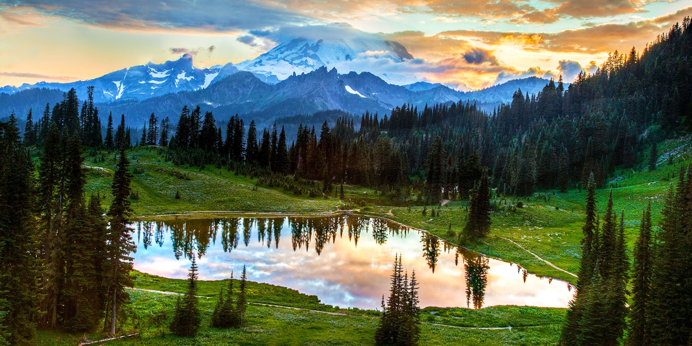
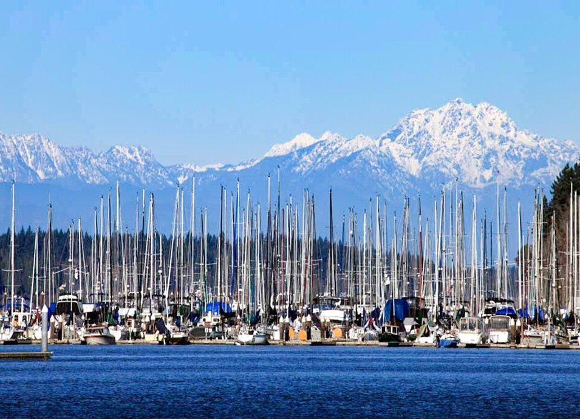
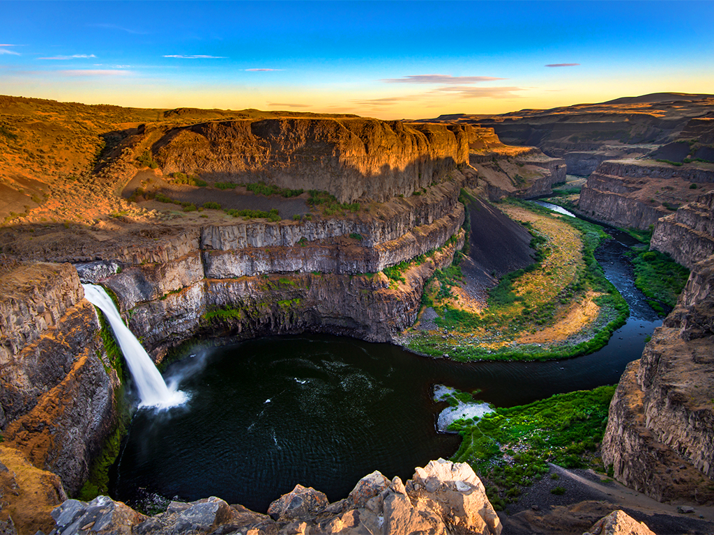
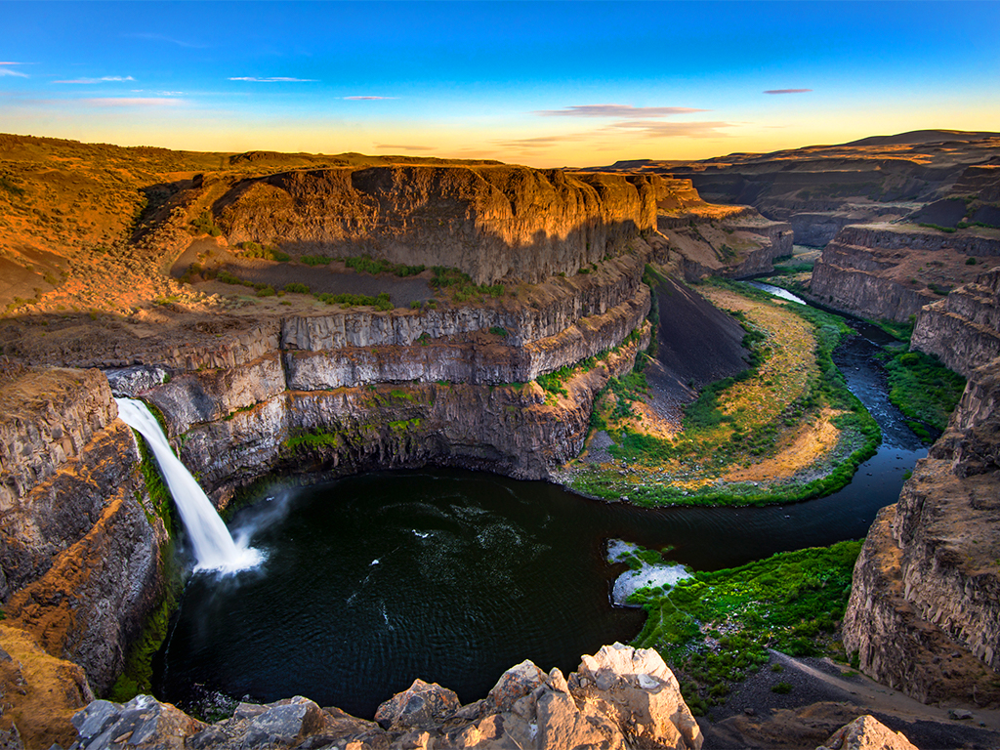
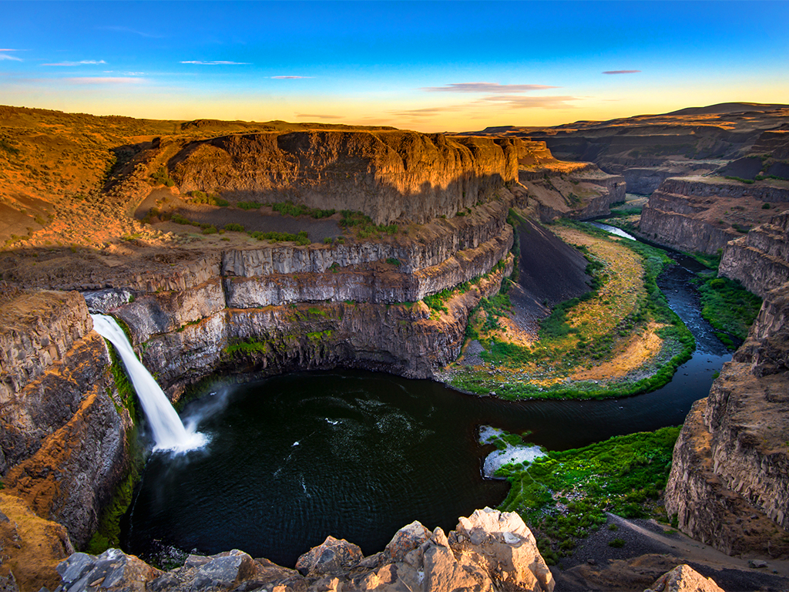

General State Information
- Largest Cities
- Seattle: Pop 775,078
- Spokane: Pop 229,447
- Tacoma: Pop 222,906
- Total Population: 7.958 Million
- Key Industries
- Agriculture (Wheat, Apples, Potatoes)
- Aerospace (Boeing, Blue Origin, Stoke Space)
- Software (Microsoft, Nintendo of America, AWS, Valve)
- Multinational Retail(Amazon, Costco)

Washington is known for its unparalleled natural beauty.
Some notable natural parks:
- National Parks
- Mt. Ranier National Park (pictured)
- Olympic National Park
- North Cascades National Park
- State Parks
- Deception Pass State Park
- Mt. Spokane State Park
- Cape Disappointment State Park
- Palouse Falls State Park
- Steamboat Rock State Park
- Lake Chelan State Park


 

